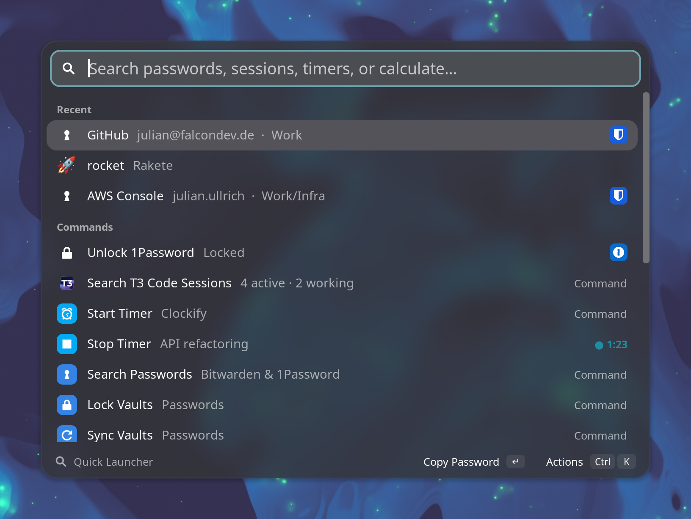
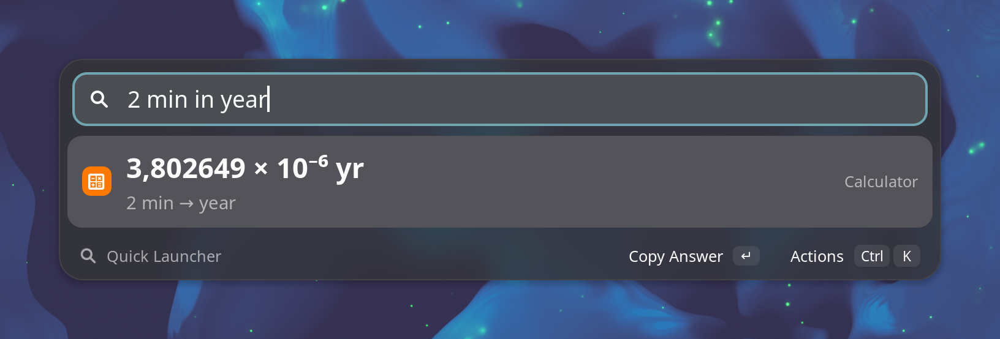
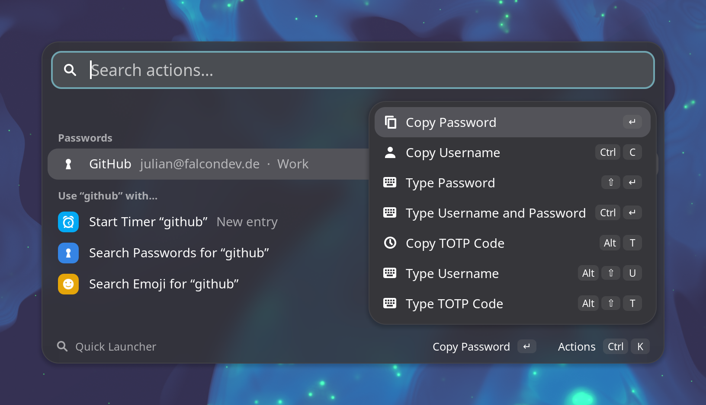

One shortcut, Ctrl Shift Enter, and one search over your Bitwarden and 1Password vaults, your recent Clockify entries and a set of commands. Anything that looks like a calculation, a unit, a date or a time zone is answered as you type.
It follows the shell theme in light and dark and with your accent color, and blurs the desktop behind it. No apps are launched and there is no clipboard history. It is meant for the things a general app launcher doesn't do well.

2 min in year,
30 mpg in l/100km), currencies at the ECB's daily rates, dates and countdowns
(days until christmas, kw), Unix timestamps and time zones
(5pm berlin in tokyo). English and German both work.@project and
#tag; the running timer stops at the same second.:rocket copies 🚀, and lock, suspend, power off,
dark mode, Do Not Disturb and Night Light are a few keystrokes away.

Needs GNOME Shell 48, 49 or 50, and rbw and/or op set up. Download the zip from the
latest release, then go to your Downloads folder:
cd ~/DownloadsRun:
gnome-extensions install --force quick-launcher@julian.falcondev.de.shell-extension.zipLog out and back in (Wayland cannot reload the shell in place), and enable it:
gnome-extensions enable quick-launcher@julian.falcondev.deEvery shortcut (all of them can be changed), vaults, the 1Password unlock method, the default currency and the Clockify API key are in
gnome-extensions prefs quick-launcher@julian.falcondev.de.